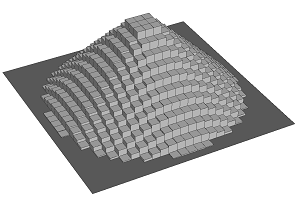
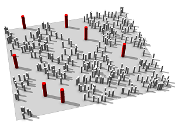

minimumDistance function (context query)
Syntax
float minimumDistance(target, label)
Parameters
- target (selector)
intra Checks against labeled shapes in the same shape tree (i.e. from the same inital shape). inter Checks against labeled shapes in other shape trees (i.e. generated by other initial shapes in the neighborhood). all Checks both intra and inter. - label (string)
The context query is performed only on shapes that match the requested label. Must not be empty. If the label is empty, infinity is returned.
Returns
The minimum distance of the current scope to all scopes of shapes that match the given label. If no shape is found matching the specified label, infinity is returned.
Description
A context query that returns the distance of the current scope to the scopes of other shapes.
Learn more about important characteristics for context queries in conditions and inter context.
Related
Examples
Split rule
 |
Lot --> split(x) { ~0.1 : Lot(split.index) }*
Lot(x) --> split(z) { ~0.1 : Lot(x, split.index) }*
Lot(x, z) --> [ case (x == 12) && (z == 12) : label("label")
else : NIL ]
Extrude(minimumDistance(intra, "label"))
Extrude(dist) --> case dist < 1 : extrude(1-dist) X.
else : NIL
This example applies the Lot rule to a single shape (intra context). The shape is split in x- and z-direction into small lots. At the center of the initial shape a shape with label "label" is created. Each lot in the grid is extruded with respect to the minimum distance to the labeled center shape. |
Scatter rule
 |
Lot --> scatter(surface, 500, uniform) { Scattered }
Scattered --> 1% : Label
else : Check
Label --> primitiveCylinder(16, 0.1, 1) color(1,0,0) label("label")
Check --> case minimumDistance(intra,"label") < 1 : NIL
else : primitiveCylinder(16, 0.05, 0.5)
This example applies the Lot rule to a single shape (intra context). Scattered cylinders are labeled with "label" and colored red in 1% of all cases. In all other cases cylinders are placed if they are more than a distance of 1 away from a red cylinder. |
Copyright ©2008-2022 Esri R&D Center Zurich. All rights reserved.